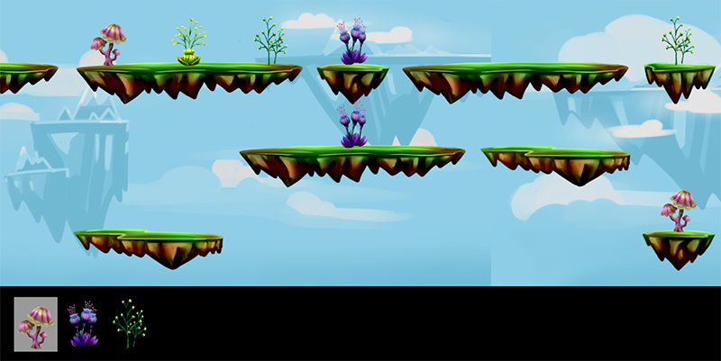
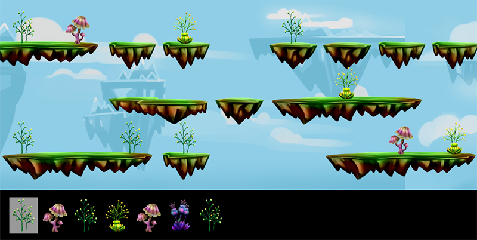
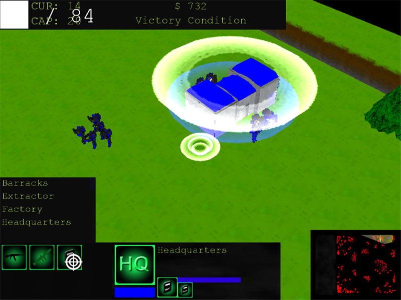
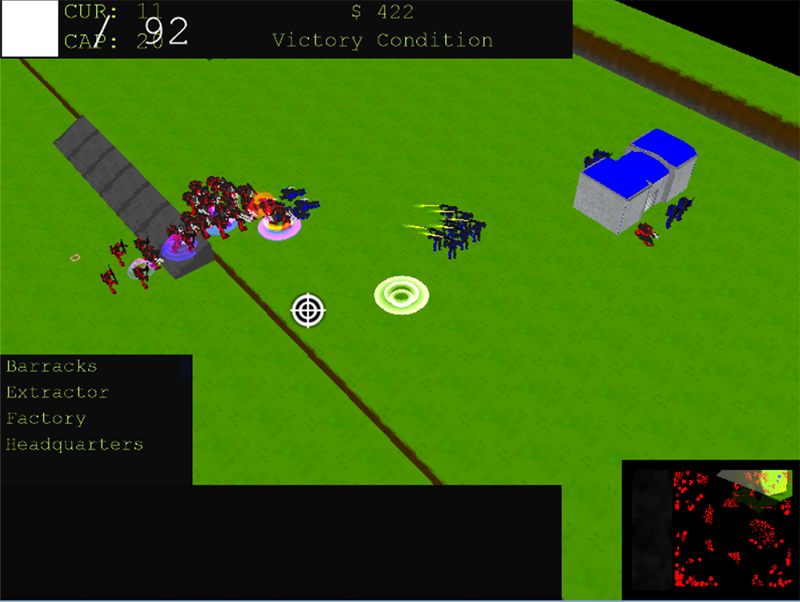
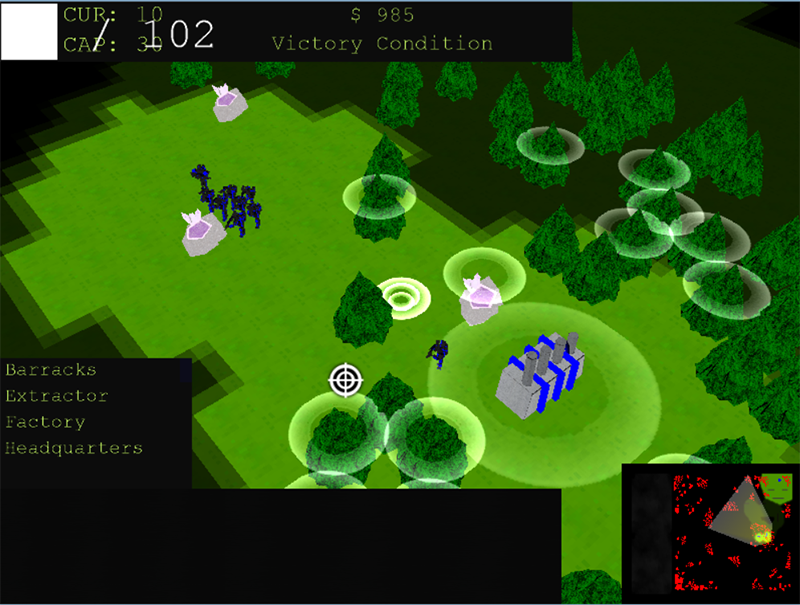
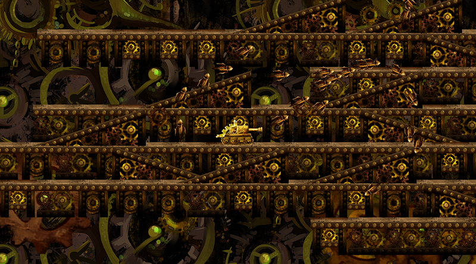

Advised by Victor Zordan at the University of California, Riverside (UCR) Graphics Lab,
I worked with two others to design and implement a sidescroller memory game meant to assist seniors and children with ADHD. In collaboration with
UCR's psychology department, we incorporated n-back training, working memory, categorization, and multiple object tracking tasks into
the game's design. I implemented the working memory task, pattern matching, and also created the initial artwork. Currently, other members
of the UCR Graphics Lab are continuing working on the game.

In the beginning of the game, players only need to memorize a short pattern, which is shown on the bottom of the screen.The pattern becomes hidden, and then the player must select the correct plants.

The length of the pattern changes to match the player's skill level so that the game is always challenging but still doable.
Defiant Planet
Spring 2014
Defiant Planet is a 3D real-time strategy (RTS) game created by a team of four programmers including myself and two artists.
As the commander of an empire, you must build an army in order to fight and defend against a rival empire.
However, in order to do so, you must venture throughout the map and harvest the necessary resources. But beware of
angering Mother Nature! Over-harvesting and over-building in any one region of the map will cause Mother Nature to fight back
with environmental disasters.
Construct new buildings.

Create an army using your headquarters and barracks.

Defend your own base from enemy attacks.Attack and destroy enemy bases.

Build extractors near trees or ore to harvest resources.
Escape Clockworktopia
Fall 2013
Escape Clockworktopia is a game created in collaboration with two others during a 24-hours-long Google Game Jam challenge.
In this sidescroller game, you play as a tank navigating through a destroyed steampunk-like world, Clockworktopia, and
you must shoot the falling gears which broke off the collapsing city in order to survive.
Navigate through the world.

Fire missiles and control them with your cursor to destroy the falling gears.
The Good Human and the Evil Koopa
Spring 2013
"The Good Human and the Evil Koopa" is an award-winning essay that analyzes character trends in video games.
The essay won the James E. Rice Award from the John S. Knight Institute and was published in their Discoveries journal.
The abstract is as follows:
Like movies, books, and other forms of entertainment, video games tailor their design to the age of the desired audience.
This study focuses on the design of friendly and aggressive game characters as a function of the target player's age.
Since children are sensitive to salient physical features and are likely to imitate aggressive human models, "E"-rated games
tend to contain human-like allies and animal-like enemies. This difference in the design of friends and does results in
greater physical differences between - and consequently easier identification of - friendly and aggressive characters. The
choice of animal-like enemies may arguably prevent young players from committing acts of aggression against human or
human-like characters. In contrast, since older players can identify less obvious enemies and understand the justification
for killing human characters, "M"-rated games tend to contain more human-like enemies.